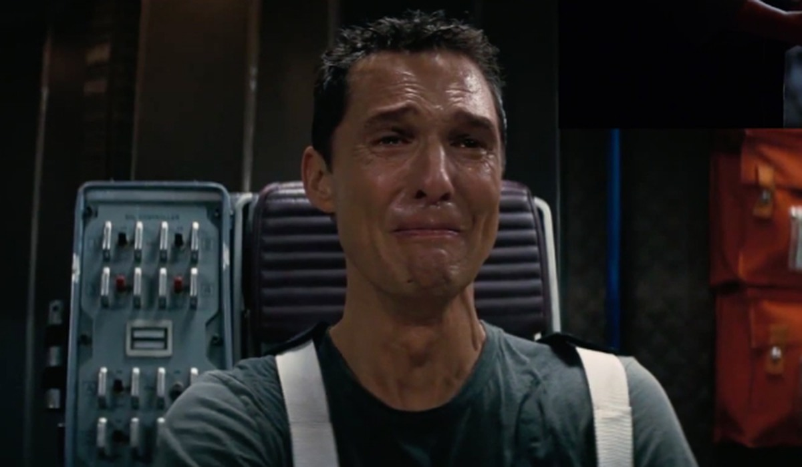
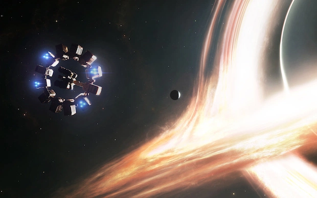
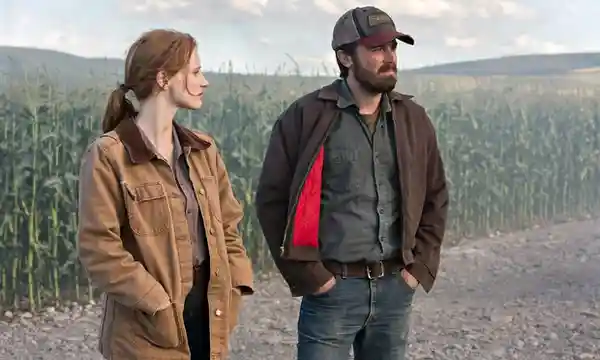
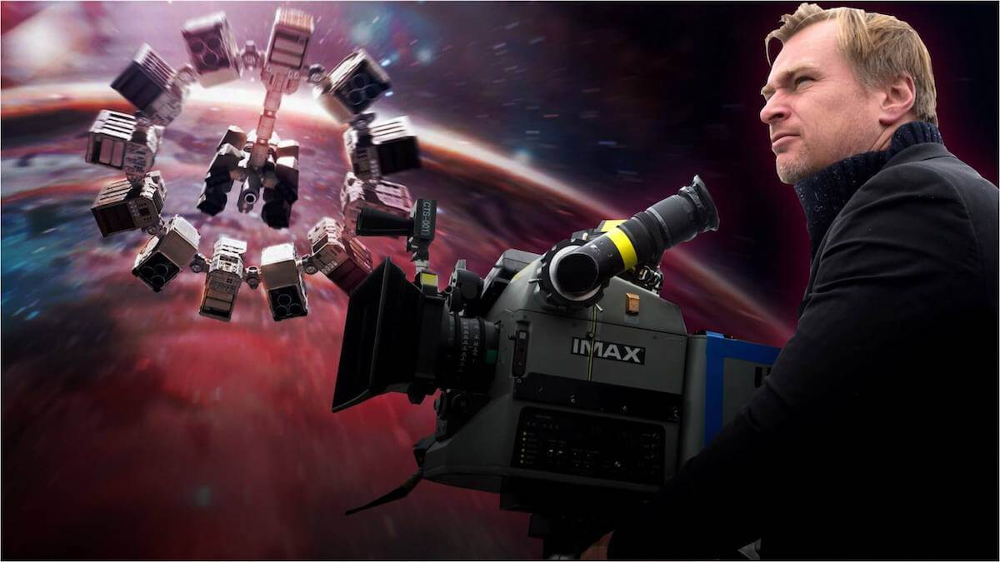

Movie Review: Interstellar: A Modern Space Odyssey
Christopher Nolan races through space and time in a thrilling sci-fi advanture that brings excitement and worry at the same time.

Introduction

If you’re into space age mystery, sci-fi spaceships, and Matthew McConaughey being humanity’s last hope, then you’ll like Interstellar. If you happen to not like any of those, stick around and I think I can still interest you in this action-packed drama of a “space odyssey”. Released November 7th 2014, Director Chrisopher Nolan starts us off somewhere in the Midwest of America. Lots of farmland and sunshine. The year is not mentioned, but we can assume it's sometime after 2010 because of the tech. Our main character, Cooper (played by Matthew McConaughey), has a daughter named Murph (Mackenzie Foy) and a son named Tom (Timothée Chalamet). They live a simple life as impromptu farmers as the second coming of the dust bowl grows nearer. All of that changes, however, when one day books in Murph’s room lead them to a secret facility that could change their lives forever.
Synopsis
My Rating: 8/10
As said prior, we begin somewhere in the Midwest of America. Cooper and his children Murph and Tom are improvised farmers trying to live day by day in a blight-ridden land. After weird happenings occur at their farm - tractors all pointing to their house and dust-lines in Murph’s room reading out to Morse Code - they use the Morse Code to locate a secret facility unbeknownst to the rest of the world. Once taken inside, after running into some kind of robot, they find out that this hidden facility is actually NASA, hidden away from the rest of the world. As the blight grew stronger and people started to perish after the food wars, all funding to NASA was cut from the government. So, NASA went into hiding to try and come up with a solution to the Earth’s problem. Professor Brand, played by Michael Caine, is the head of NASA and has devised two methods on how to save humanity as it is obvious humanity will perish if left on Earth. One method is to send fertilized human eggs to another habitable planet and start fresh on a new world. The other method involves trying to save Earth’s population - 8 billion strong. However, that second method requires an equation to be solved that Professor Brand just can’t crack. Cooper is asked to pilot their last ship, the Endurance, to find the habitable planets through a wormhole and save humanity. However, that will require him to leave Murph and Tom behind and the possibility of never seeing them again. Will Cooper choose to try and save humanity or will he stay with Murph and Tom and live out the rest of his life as a farmer?
Acting: Matthew McConaughey
Matthew McConaughey’s acting throughout the movie was superb. Writer Matt Zoller Seitz of rogerebert.com describes McConaughey as “a super-intense actor who wholeheartedly commits to every line and moment he's given, is the right leading man for this kind of film” (Seitz, n.d.). From the torn Cooper leaving his family on Earth to his rage when he realizes he should’ve stayed back home, Matthew McConaughey’s portrayal as a broken man looking for adventure while still wanting to care for his son and daughter is a true masterpiece. One of the most iconic acting scenes from the movie is when Cooper wakes from cryo-sleep and realizes that they have been asleep for 27 years. Before Cooper and his team enter the wormhole, he reviews the video messages from his son and daughter back home. The videos initially start off from his son talking about how his life is going. Cooper shows a sign of hope in his eyes and triumph as his son is doing better than ever. As more videos progress and he finally gets to Murph’s video, you can tell he is starting to break down and is on the verge of tears. Throughout Murph’s video, Cooper is holding back his cries and tears as best he can. In this scene it really feels like McConaughey is feeling pain. Through this scene and many others, whenever McConaughey is on set, it is never a dull moment.
Why Was It So Intriguing To Watch?
This question may have a different meaning to everyone. For me however, Interstellar was so special because it explored questions humanity has no answer to while still providing an enjoyable experience. There are a lot of documentaries that explore the topic of wormholes or blackholes or space itself, but they don’t offer the same level of enjoyability as Interstellar does. It provides a purpose on why we need to know the answers to these questions and thrusts the watcher into having to watch Cooper and his crew figure out the answers for themselves. Scott Foundas, writer for Variety.com, says “It’s hard to think of a mainstream Hollywood film that has so successfully translated complex mathematical and scientific ideas to a lay audience…” (Foundas, 2014).
What Could Be Done To Improve The Movie?
Everyone has something that they think would make a movie better. In this case, I believe the film has a bit of a hiccup during the part with Murph and her Brother Tom. The conflict is that her brother thinks farming is the only way to save humanity and that their father is gone forever. Murph on the other hand believes that she is one step away from solving the equation and saving humanity. So, in an effort to protect their house, Murph sets the cornfield on fire to distract Tom. I think that this is a bit off track from the beginning of the movie where Tom is very supportive of his father for going out and saving humanity. I think that there could’ve been a different conflict here as throughout most of the movie, other than where Tom is sending videos to Cooper of his life, we don’t hear or see much of Tom. It’s just all the sudden he wants Murph to stop everything she is doing for NASA and to help with the farm - as if this was never a problem before, it just became a problem now.
Conclusion
In the end, I still think Interstellar is a fantastic movie and definitely interested me more into the vast unknown we call space. Interstellar was another great movie that inspired many people into knowing more about space. The film is a great sci-fi, adventure, drama that is somewhat educational in a way. Funny enough, in the early production of the movie, Dr. Kip Throne who helped with the creation of the script laid down two guidelines, “...nothing would violate established physical laws, and that all the wild speculations would spring from science, and not from the creative mind of a screenwriter” (IMDb, n.d.). So they really wanted to make sure that Interstellar could be as realistic as possible. More of a possible future epic rather than another strange space movie. My final rating of Interstellar is an 8 out of 10.
References
Foundas, S. (2014, November 22). Film review: ‘Interstellar’. Variety. https://variety.com/2014/film/reviews/film-review-interstellar-1201338475/
https://variety.com/2014/film/reviews/film-review-interstellar-1201338475/IMDb. (n.d.). Interstellar (2014).
https://www.imdb.com/title/tt0816692/?ref_=tttr_tr_ttNolan, C. (Director). (2014). Interstellar [Earth's future has been riddled by disasters, famines, and droughts. There is only one way to ensure mankind's survival: Interstellar travel. A newly discovered wormhole in the far reaches of our solar system allows a team of astronauts to go where no man has gone before, a planet that may have the right environment to sustain human life.]. Paramount Pictures, Warner Bros, Legendary Entertainment.
Seitz, M. Z. (n.d.). Interstellar movie review & film summary (2014). Movie reviews and ratings by Film Critic Roger Ebert | Roger Ebert.
https://www.rogerebert.com/reviews/interstellar-2014